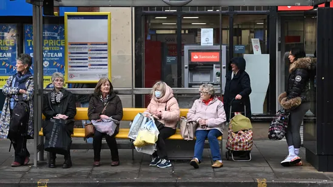

The bleak forecasts were released alongside the Chancellor of the Exchequer Jeremy Hunt’s autumn statement. He pledged to both support households over the recession and the depths of the energy crisis and bring debt under control by 2027-28.
Britain’s cost of living crisis will wipe out eight years of growth in household incomes in just 24 months and plunge the economy into a recession lasting more than a year, the government’s independent forecaster said.
The Office for Budget Responsibility said real household incomes will shrink by 7% over the two years to April 2024 despite £100 billion of government support. The economy is already in a recession that will see output contract by 2% and cost 500,000 jobs, it said.
The bleak forecasts were released alongside the Chancellor of the Exchequer Jeremy Hunt’s autumn statement. He pledged to both support households over the recession and the depths of the energy crisis and bring debt under control by 2027-28.